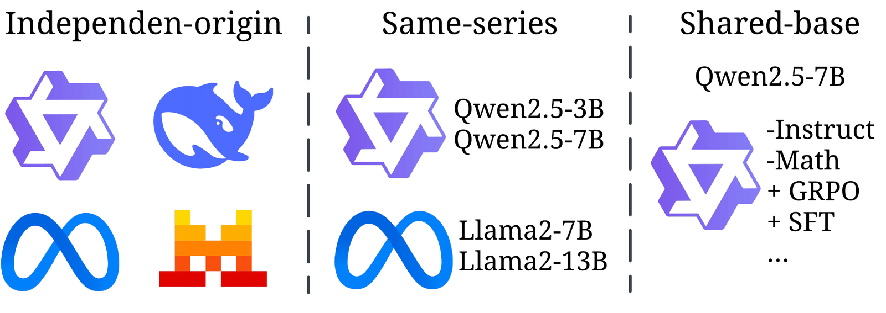
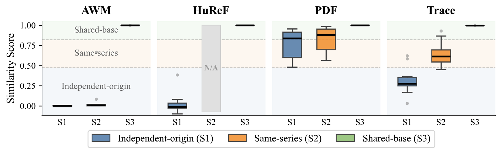
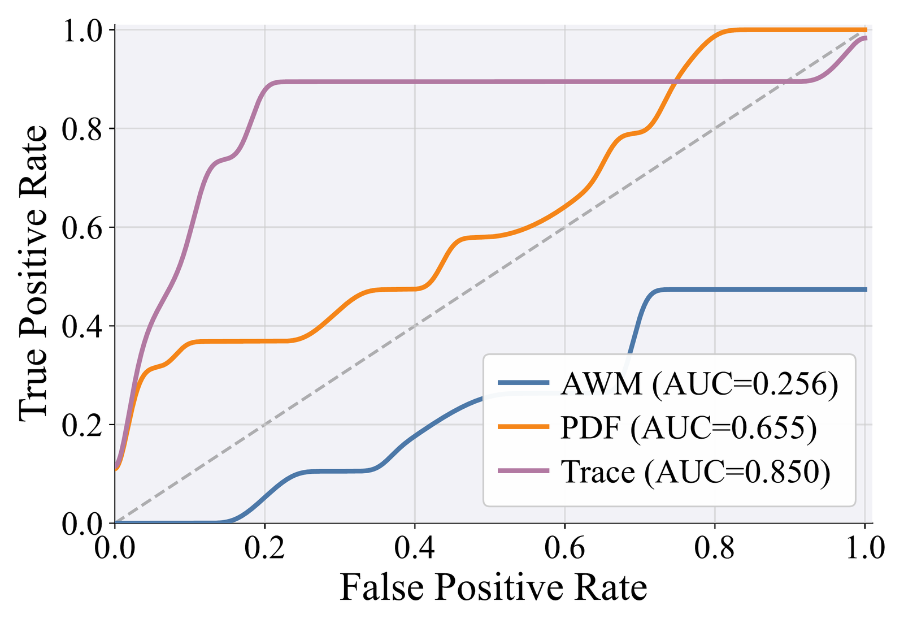
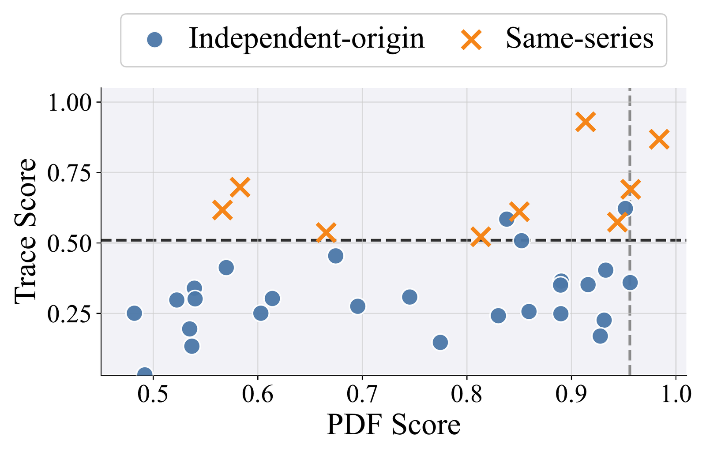
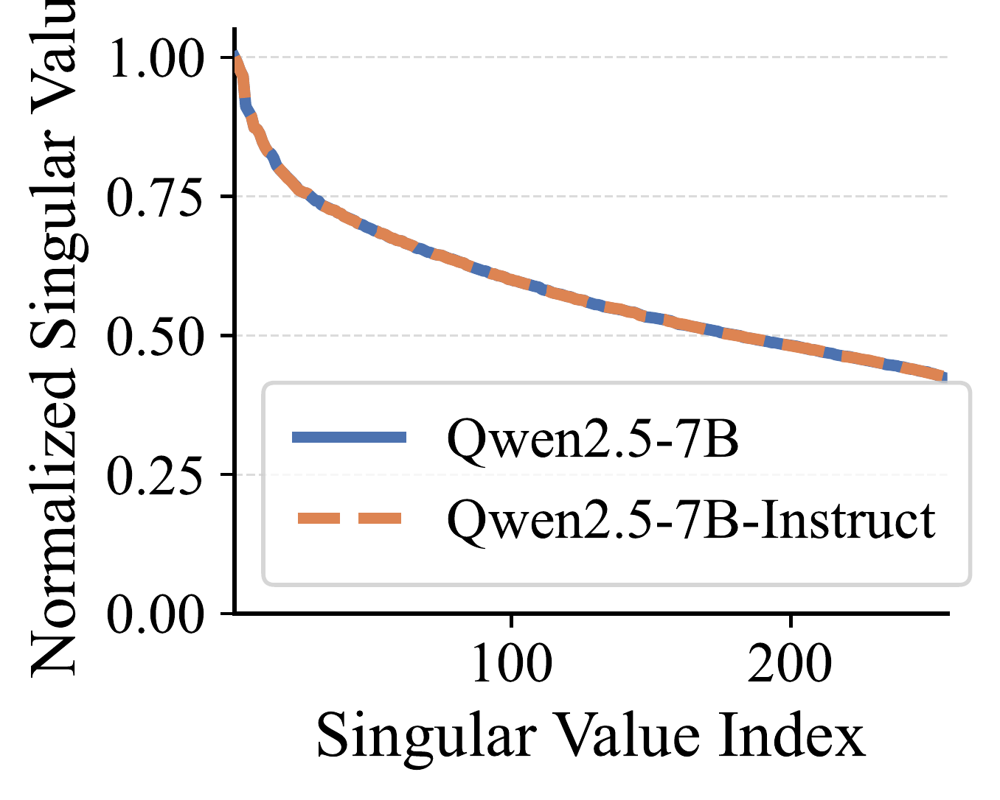
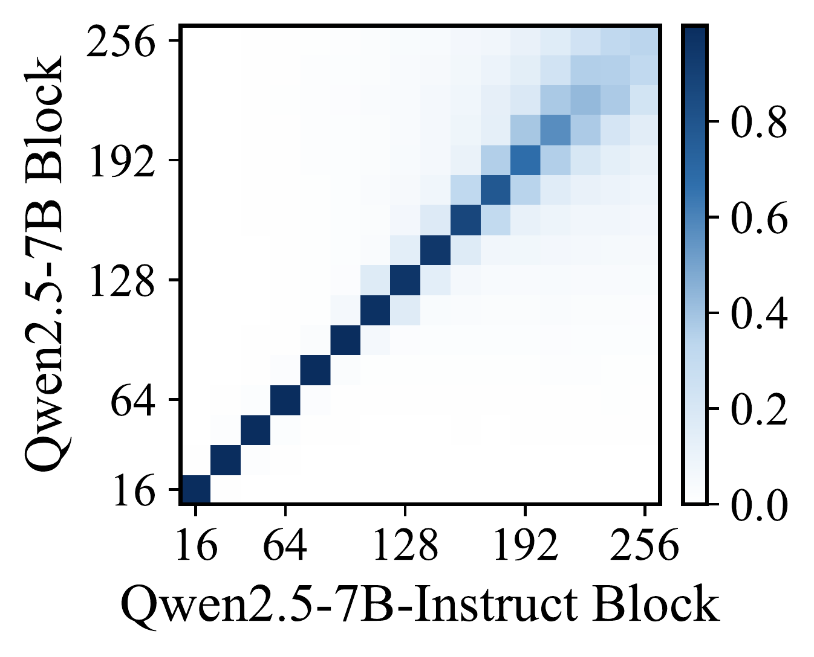
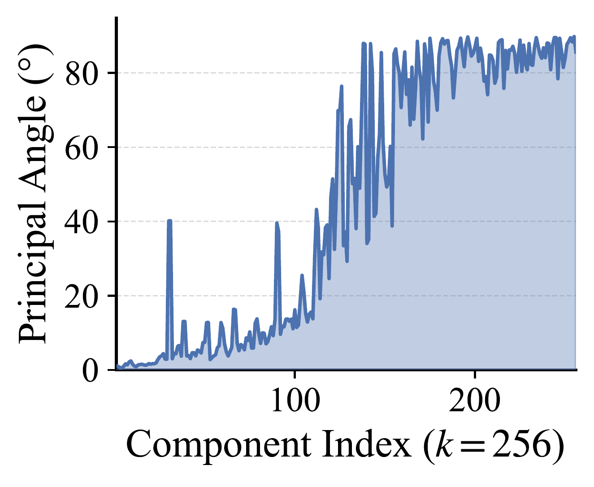
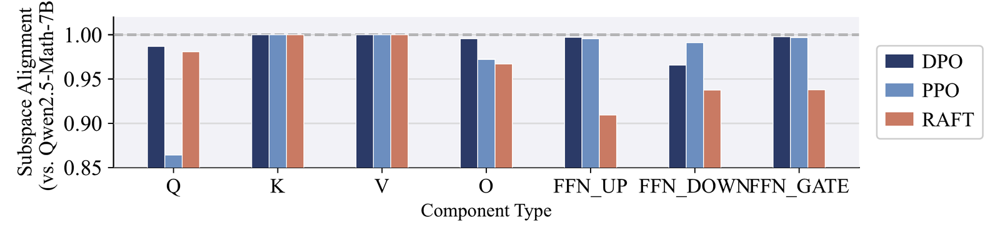

Open-weight large language models (LLMs) are increasingly developed through complex, multi-stage pipelines, leading to intricate lineage relationships that reflect model origin, ownership, and evolution. Understanding these relationships is important for model provenance, governance, and supply-chain integrity. In this work, we investigate the notion of LLM “biometrics”, analogous to human biometrics, to ask whether LLMs exhibit intrinsic fingerprints in weight space alone, without access to input data, that reveal their origin and lineage. We formulate this as a lineage discrimination problem, distinguishing among independent-origin, same-series, and shared-base models. To characterize these relationships, we propose a unified geometric fingerprinting framework that analyzes weight matrices from two complementary perspectives: (i) spectral energy, captured by singular value distributions to encode global magnitude patterns, and (ii) subspace alignment, quantified via subspace deviations to capture directional geometry. Our analysis uncovers a clear hierarchy of structural similarity in weight space: spectral energy reliably distinguishes independently trained models and different model families, while subspace alignment enables fine-grained discrimination among closely related models, including variations in dataset scale and post-training procedures. Extensive experiments on over 110 diverse open-weight LLM pairs demonstrate that weight-space geometry provides a robust and interpretable signal for model lineage, enabling coarse-grained regime separation and fine-grained discrimination within shared-base models.
The same decomposition answers two different questions, and neither one alone is enough.
0.850
AUC separating independent-origin from same-series pairs (PDF 0.655 · AWM 0.256)
Answers are these two models related at all? Needs only a Frobenius norm, no SVD, and works across any architecture or depth.
0.18 to 0.98
Score range across shared-base pairs (AWM, HuReF and PDF all report 0.997 to 1.000)
Answers how far has this variant moved from its base? Resolves data scale and post-training algorithm exactly where prior white-box metrics saturate.
Every pair from the model zoo in configs/pairs/, with the scores as reported in the paper.
Pick a model on the left and the menu on the right narrows to the models it was actually compared
against.
Open-weight models are built on top of one another through fine-tuning, alignment, distillation and merging. We formulate tracing that ancestry as hierarchical lineage discrimination over three regimes of increasing shared information, and ask for a single similarity function $S(\theta_a, \theta_b)$ that respects the ordering
$$S_{\text{independent-origin}} \;<\; S_{\text{same-series}} \;<\; S_{\text{shared-base}}$$

S1 Independent-origin. Trained without shared initialization, data or pipeline. S2 Same-series. Shared architecture and training pipeline, differing in scale. S3 Shared-base. A common pretrained model diverging through post-training.
The regimes are reference points rather than an exhaustive taxonomy, and a good metric should behave continuously between them. Cross-series pairs bear this out. Qwen2.5 against Qwen3, which share a provider but differ in architecture and pretraining corpus, score a mean Trace of 0.479, sitting between the independent-origin and same-series average scores.
Prior white-box methods reduce weight space to coarse summary statistics: HuReF builds algebraic attention-weight fingerprints, AWM applies CKA with Hungarian layer matching, and PDF correlates layer-wise parameter statistics. Each detects that shared-base models are related, and little else.

Similarity scores per method across the three regimes. AWM pins S1 and S2 to the floor and HuReF cannot be evaluated on S2 at all. PDF pushes both up near 0.8 with heavy overlap. Only Trace produces a monotone, visibly separated ordering.
| Applicability | S1 Indep. origin |
S2 Same series |
S3 Shared base |
Data scale |
Post-train algorithm |
|---|---|---|---|---|---|
| AWM | ✗ | ✗ | ✓ | ✗ | ✗ |
| HuReF | ✗ | ✗ | ✓ | ✗ | ✗ |
| ✗ | ✗ | ✓ | ✗ | ✗ | |
| Ours | ✓ | ✓ | ✓ | ✓ | ✓ |
A model is a set of weight matrices $\theta = \{\mathbf{W}_c^{(l)}\}$ over layers $l$ and component types $c$:
$$c \in \{Q,\, K,\, V,\, O,\, \text{FFN}_\text{UP},\, \text{FFN}_\text{DOWN},\, \text{FFN}_\text{GATE}\}$$
Summarize each matrix by its spectral energy, which is cheap because it is just a trace with no SVD required:
$$t(\mathbf{W}_c^{(l)}) := \sqrt{\operatorname{tr}\!\big((\mathbf{W}_c^{(l)})^\top \mathbf{W}_c^{(l)}\big)} = \sqrt{\textstyle\sum_{i=1}^{n}\sigma_i^2}$$
Stacking that over layers gives a spectral trace fingerprint $\tau_c(\theta) = [\,t(\mathbf{W}_c^{(1)}), \ldots, t(\mathbf{W}_c^{(L)})\,]$, and two models are compared by correlating their curves after resampling to a common depth and z-scoring:
$$S(\theta_a, \theta_b) = \mathbb{E}_c\big[\operatorname{Corr}(\tilde{\tau}_c(\theta_a),\, \tilde{\tau}_c(\theta_b))\big]$$
Normalizing away depth and magnitude is exactly what lets a 3B model be compared against a 14B one. On the hardest coarse-grained task, telling independent-origin from same-series pairs, Trace reaches AUC 0.850, against 0.655 for PDF and 0.256 for AWM, the last of which is worse than chance.

ROC for independent-origin vs. same-series.

Each point is a model pair. PDF (x) overlaps. Trace (y) separates by a consistent margin.
Spectral energy saturates in the shared-base regime, where a base model and its instruct variant have essentially identical spectra. But identical magnitude does not mean identical direction.

(a) Spectra nearly overlap.

(b) Yet subspaces spread off-diagonal.

(c) Principal angles grow in the tail.
So take the top-$k$ left singular vectors of each matrix and form the cross-subspace matrix
$$\mathbf{C}_c^{(l)} = \big(\mathbf{U}_{c,k}^{(l)}(\theta_a)\big)^{\!\top} \mathbf{U}_{c,k}^{(l)}(\theta_b)$$
whose singular values are cosines of the principal angles. The signal lives in the worst-aligned directions, so we average the $J$ smallest:
$$S_c^{(l)}(\theta_a, \theta_b) = \frac{1}{J}\sum_{i \in \mathcal{I}_c^{(l)}} \sigma_i\big(\mathbf{C}_c^{(l)}\big) \in [0, 1]$$
with $J = 3$. Per component we then average the three least-aligned layers, and average across components. Where the baselines report a flat wall of 0.997–1.000, this spreads the same pairs across nearly the whole unit interval:
| Shared-base model pair | AWM | HuReF | Trace | Ours | |
|---|---|---|---|---|---|
| Qwen2.5-7B vs Qwen2.5-7B-Instruct | 0.999 | 0.999 | 1.000 | 0.998 | 0.823 |
| Qwen2.5-14B vs Qwen2.5-14B-Instruct | 0.999 | 1.000 | 1.000 | 0.998 | 0.632 |
| Qwen3-4B vs Qwen3-4B-Instruct | 0.998 | 0.999 | 0.999 | 0.998 | 0.208 |
| Qwen3-4B vs Qwen3-4B-Thinking | 0.998 | 0.999 | 0.999 | 0.999 | 0.184 |
| Llama-3.1-8B vs Llama-3.1-8B-Instruct | 0.998 | 0.997 | 0.999 | 0.997 | 0.814 |
| Llama-3.1-8B vs Alpaca-SFT (10%) | 0.999 | 0.998 | 1.000 | 1.000 | 0.976 |
| Llama-3.1-8B vs Alpaca-SFT (25%) | 0.999 | 0.999 | 0.999 | 0.998 | 0.935 |
| Llama-3.1-8B vs Alpaca-SFT (50%) | 1.000 | 1.000 | 1.000 | 0.998 | 0.903 |
| Llama-3.1-8B vs Alpaca-SFT (100%) | 1.000 | 1.000 | 1.000 | 0.998 | 0.889 |
Upper block: official post-training variants, trained on large and diverse data, which move furthest. Lower block: controlled Alpaca SFT at increasing data proportions. Alignment decreases monotonically from 0.976 to 0.889 as the fine-tuning set grows from 10% to 100%.
Starting from Qwen2.5-Math-7B, we apply DPO, PPO and RAFT under the Online-DPO-R1 framework, with the same initialization, the same data and aligned optimization, and read the per-component alignment.

Per-component subspace alignment against the base model. $K$ and $V$ stay pinned near 1.0, so those subspaces are largely preserved. $Q$ varies most across methods: PPO drops it sharply while DPO barely moves it. RAFT instead concentrates its perturbation in the FFN components.
The signal also survives transformation. Across quantization, unstructured magnitude pruning, model merging and data distillation, Trace preserves the coarse-grained shared-base lineage signal while subspace alignment tracks transformation severity and component-specific directional change.
Scoring is numpy only. Only fingerprint extraction needs torch, and it is cached per model so every pair that mentions it is cheap. One GPU handles models up to ~14B.
pip install -r requirements.txt
python -m llm_biometrics compare \
--model-a Qwen/Qwen2.5-7B \
--model-b Qwen/Qwen2.5-7B-Instruct \
--method both --components allTrace (Sec. 4, Eq. 5): spectral energy across layers
OVERALL +0.9980 very high: shared base or near identical weights
Subspace (Sec. 5, Eq. 8): k=512, J=3, bottom 3 layers
OVERALL 0.8234 well aligned: shared base with moderate post-training
Trace says these share a base. Subspace says how far the instruct variant rotated away from
it, the number no prior white-box method resolves. The Appendix B model zoo ships as pair lists in
configs/pairs/, with one script per scenario covering all 110+ pairs.
@article{chen2026built,
title={Who Built This Model? Tracing LLM Lineage via Spectral Fingerprints in Weight Space},
author={Chen, Yiwei and Shang, Bingqi and Liu, Sijia},
journal={arXiv preprint arXiv:2608.07786},
year={2026}
}